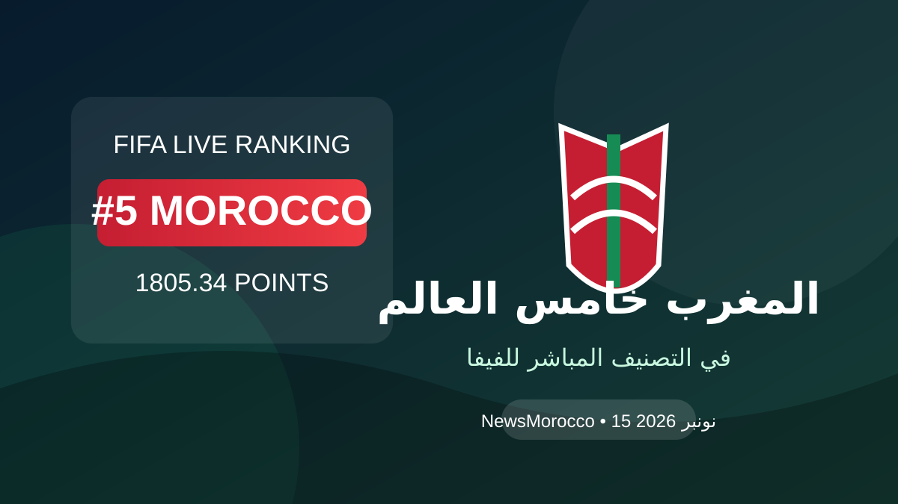

المنتخب المغربي يعود إلى المركز الخامس عالمياً في تصنيف الفيفا المؤقت

عاد المنتخب الوطني المغربي لكرة القدم إلى المركز الخامس عالمياً في التصنيف المباشر والمؤقت للاتحاد الدولي لكرة القدم «فيفا»، بعدما استفاد من نتائج الجولة الدولية لشهر نونبر، ليصبح رصيده 1805.34 نقطة وفق التحديثات المتداولة يوم الأحد 15 نونبر 2026.
وجاء هذا التقدم بعد فوز أسود الأطلس على منتخب النيجر بنتيجة خمسة أهداف مقابل هدف واحد، في المباراة التي احتضنها المركب الرياضي محمد الخامس بالدار البيضاء يوم الجمعة 13 نونبر، ضمن تصفيات كأس أمم إفريقيا 2027.
🇲🇦 المغرب: فوز على النيجر 5-1.
🇧🇷 البرازيل: خسارة أمام اليابان 2-3.
🇵🇹 البرتغال: خسارة أمام الدنمارك 1-4.
رصيد المغرب في الترتيب المباشر: 1805.34 نقطة.
وساهمت خسارة البرازيل أمام اليابان في تقدم المنتخب المغربي إلى المركز السادس، قبل أن تسمح خسارة البرتغال أمام الدنمارك بصعوده إلى المركز الخامس في الترتيب المباشر.
ويظل هذا الترتيب مؤقتاً وقابلاً للتغيير مع استمرار مباريات فترة التوقف الدولي. ومن المقرر أن يصدر الاتحاد الدولي لكرة القدم التصنيف الرسمي المقبل يوم 18 نونبر 2026، بعد احتساب نتائج المباريات المؤهلة لذلك التحديث.
وسيخوض المنتخب المغربي مباراة أخرى أمام النيجر يوم الثلاثاء 17 نونبر بالرباط، وهي مواجهة تتيح لأسود الأطلس فرصة تعزيز رصيدهم ومواصلة المنافسة على المراكز المتقدمة عالمياً.
وكان المغرب قد بلغ المركز الخامس في تصنيف الفيفا الرسمي خلال شتنبر 2026، قبل أن يتراجع إلى المركز السابع في تحديث أكتوبر. ويعني التقدم الحالي عودته إلى المركز الخامس في الترتيب المباشر، وليس إعلاناً نهائياً عن ترتيب رسمي جديد.
← العودة إلى الصفحة الرئيسية